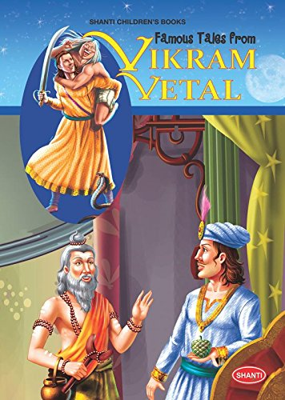

|

|
How Vaitaal saved Vikram
When the pyre of the cremation ground was in sight, Vaitaal said to Vikram -
"Vikram, This Yogee is very cunning. He is planning to kill you. I know his plan.
He will ask you to prostrate, and when you will prostrate before him, he will
cut your neck with sword. So be careful."
Vikram got surprised to hear this. Although he had this doubt in his mind, but
now he was more careful. Vikram came to the Yogee with Vaitaal on his
shoulder. Yogee became very happy to see Vaitaal, he said - "Bravo king
Vikram, You are really courageous. Now you will rule the whole Prithvi without
any obstacles."
The Yogee cut the body of Vaitaal into pieces and sacrificed it in the fire,
performed some Taantrik rites, and in the last offered Poorn Aahuti (last
Aahuti). Vikram was noticing all this very carefully. He was standing just
straight. After finishing everything, the Yogee said - "King Vikram, Now you
earn Punya by prostrating in front of me.
Vikram was waiting for this moment only. He remembered Vaitaal's
instruction, that "as you will prostrate in front of him, he will cut your neck."
so he said - "I am a king, I do not prostrate in front of anybody. The Yogee
got surprised to hear this. He said - "OK, Then I prostrate before you." As
he bent down to prostrate before the king, the king cut his neck with his
sword. The Yogee was dead.
The then a loud laughter echoed in that lonely forest. That laughter was of
that Vaitaal. Vikram got stunned to see Vaitaal, he exclaimed - "Vaitaal you?
You were dead?" Vaitaal said - "Yes, It is me. By sacrificing this Yogee, you
have given me life. If you had not killed him, I could not have been born
again."
The king saw that the form of Vaitaal has changed. Now he was a very
handsome young man. Vikram asked him - "Now what will you do?" "Whatever
you order." Vikram said - "Then you come and stay with me. I will appoint you
my minister." Vaitaal became happy to hear this, he said - "I will serve you
with my full honesty." He expressed his gratefulness to Vikram as he gave him
a new life.
He said - "Hey Raajan, This Yogee was my elder brother. he had changed me
into Vaitaal with the power of his Tantra. He abducted my wife too, and now
he wanted to take your kingdom, that is why he wanted to kill you, but since
you have killed him, you have saved your kingdom, as well as you have given me
a new life. Your fame will remain in this world forever."
The day was about to break, Vikram had returned to his palace along with
Vaitaal.
|